~The Property Panel~
6/2/2025
Modifier, Physics, and Particles
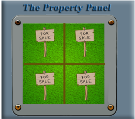Overview of Property Panel
The Property Panel in Blender is a panel that is located on the right side of the application. It displays and edits both data and properties of either the active screen or object. The Property Panel can be found directly below the Outliner.
Object Property Panel
Inside of the property panel’s many category tabs, you will find, the Object Property. This Panel can be one of the most helpful panels, while working with an 3D object. This particular illustration below, shows the properties that are available for the Cube. This will not be the first tab on the Property panel. You can find this panel by selecting the Object Property tab, which is represented by an orange square on the left side of the panel. With this tab open, you will find that you can change quite a few properties that are processed by this object.
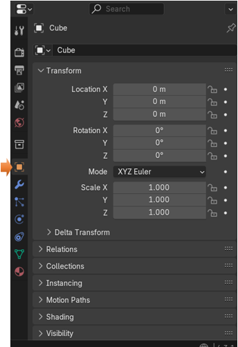
You can flip through the tabs, that reside on the left side of the panel, as illustrated above. Each tab will represent a different category of properties for the elements in Blender.
The Material Property Panel
For instance, besides being able to change dimensions or orientation, you will additionally find a tab where you can change the color. The setting for changing the color of an object can be found in the Material Section of the Property panel. This tab is represented by a red ball, at the bottom of the panel. With your object selected, you can click on the Base color, white color swatch, and then you can change your selected 3D element to any color that you desire.
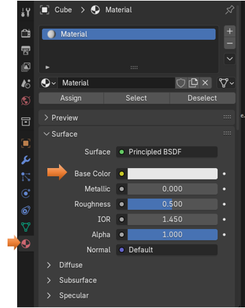At the top of this panel, when you have a tool from the tool box selected, you will find options for this tool. In the image below, you will see the panel for the Loop Cut tool, which can be viewed by selecting the Loop cut tool from the toolbox in Edit mode. As this property panel is available in all of your workspace modes.
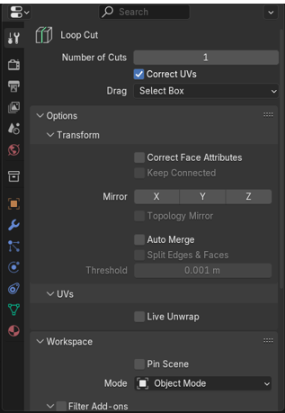Modifier, Physics, and Particles
You will find panels for Modifiers, Physics, Particles and more. Illustrated below in the Modifier panel is the Boolean Modifier. There is a whole slew of modifiers that you can choose from using this panel. You can pick and choose among the large inventory by clicking on the Add Modifier Button.
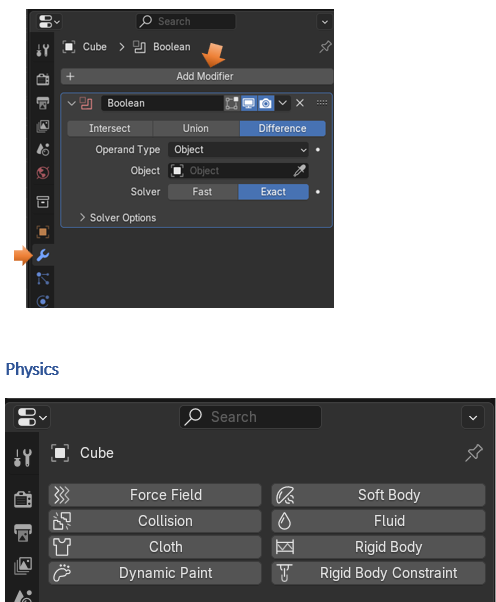
To actually see the Particle System panel, you have to click on the Plus sign to add one.
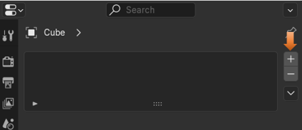
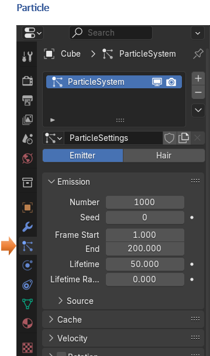
Modifiers, Physics and Particles are huge subjects all on their own, and truly deserve their own tutorials to give them any justice.
The Render Property Panel
This panel here will deal with Rendering options. This is how you decide, and set many values to manage how your blender objects will be rendered on the screen. This panel starts off by allowing you to choose your Render Engine. The render engine, is a program that determines how light will interact with the final image or scene. This will give more realism to your work.
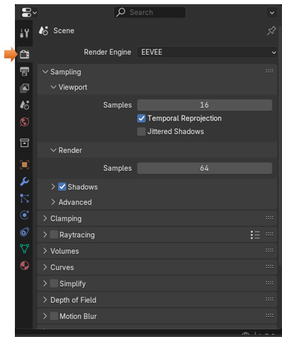
Blender comes with a few different engines. Each one has its strengths and weaknesses, Eevee is the default engine, and it is fine, as it will create high-quality, realistic rendering.
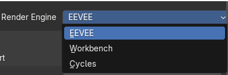The World Property Panel
If you click on the World property panel, and you click on the blue button that says Use Nodes, you can change the color of your background.
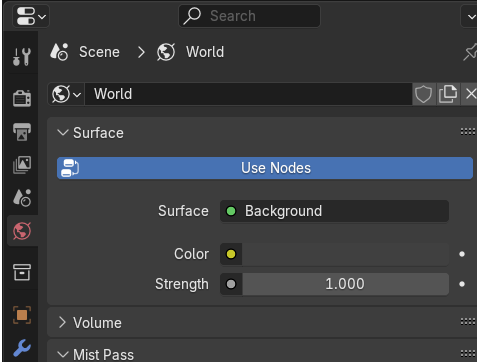
It is only after you press the blue Use Nodes button that you will have access to a color swatch. There are other settings too that you can set here, but honestly, if you are trying to add a background image, it is much better to do this in the Shading workspace and a node panel, which will be available to you there. This is where you can manipulate the nodes manually, and get more precise setting over a multitude of things.
This is what a node looks like, you will have a kind of panel with all sorts of properties that you can manipulate. These nodes can be attached to other nodes to create more complicated set ups. Here you have the Default Principled BSDF node (your property setting node), and the Material Output node. You will always need at least one node like this, and the Output node.
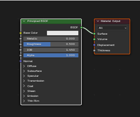The output nodes take all the stuff you are setting and puts it on the computer screen so you can see it. So, it is rather important. We can get more into nodes when we get into the chapter in this tutorial pertaining to the Shader workspace.
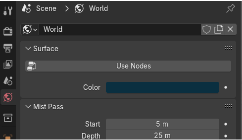In order to see this color for your background you must be in Render mode.
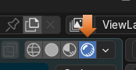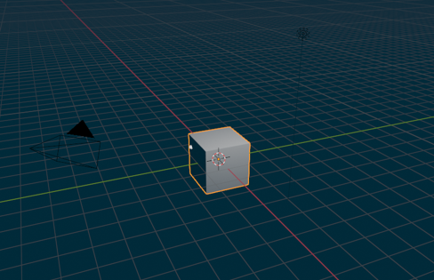
Accessing Lights and Camera
If you take a look along the tabs on the left side of the panel, you will probably notice that you do not have anything representing the lights or the camera. That is because in order to see these types of tabs, you actually need to select the corresponding item in the viewport first.
Select a light. and the Light tab will appear. And so now you have access to all of the settings.
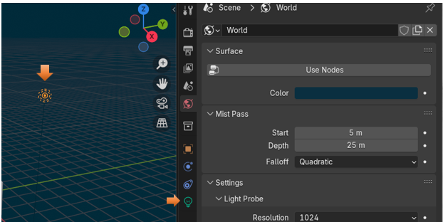
The Same thing with the camara, when you select the Camera in the viewport, the tab for the camera will appear. It is now that you will have access to all of the camara settings.
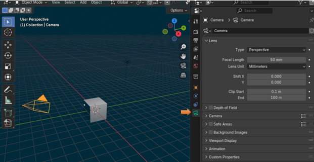Some of these panels can get quite in depth, while others are fairly straight forward. As you dive deeper into Blender, you will learn more and more about, just what each of these property panels can do for you, and how they can help you as you build your 3D models, and while using this magnificent application provided from Blender.